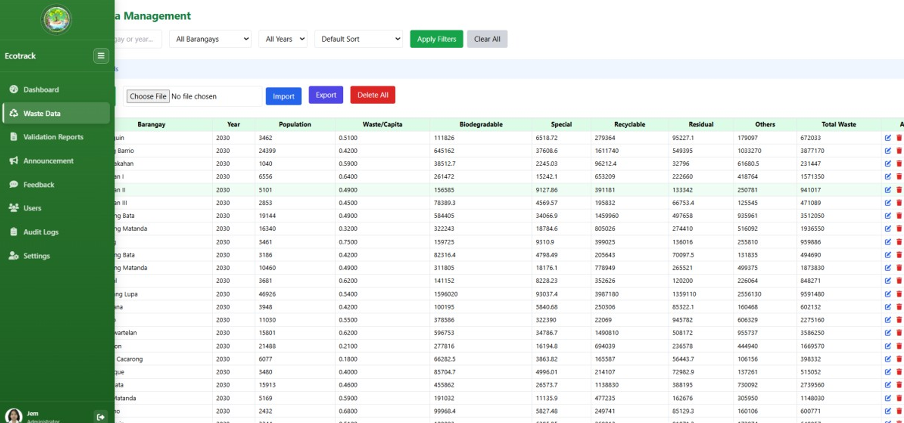
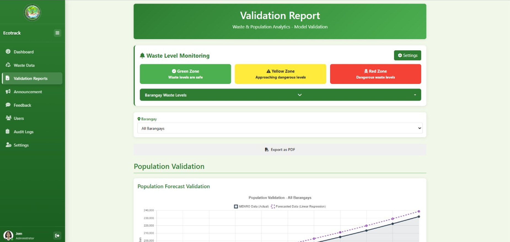
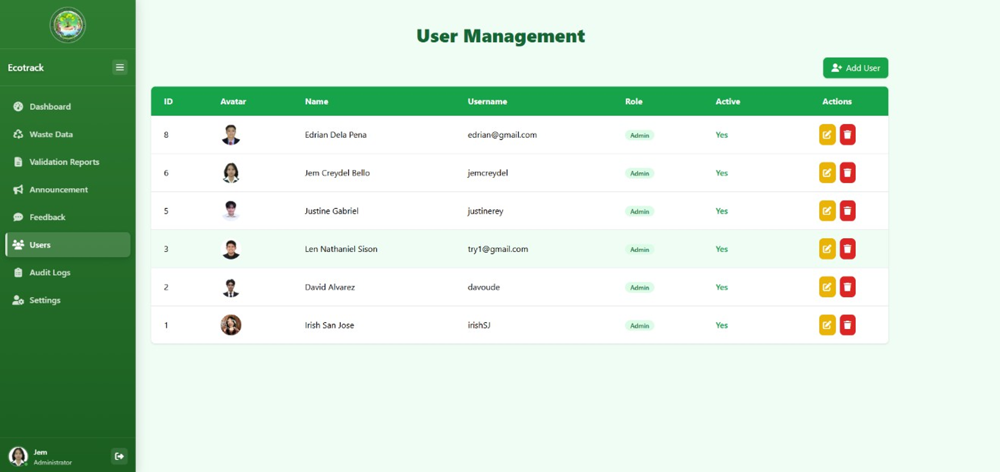
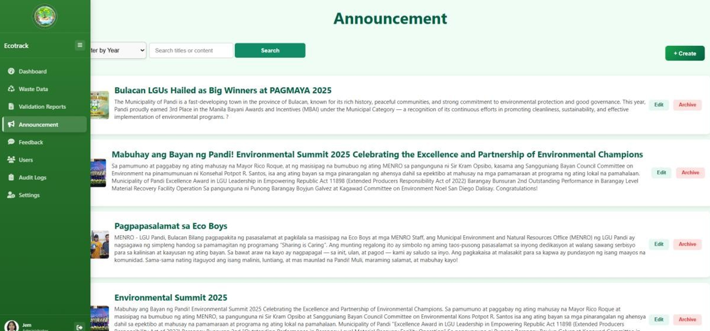

Less manual work
Bulk imports and automatic calculations reduce repetitive data entry and calculation errors.
Capstone / Government & Community
A capstone solution for making municipal environmental data easier to manage, validate, and use for better waste-management decisions.
Overview
MENRO's waste estimates were calculated manually in Microsoft Excel. This project developed a user-friendly website that presents population and waste forecasts, supports barangay-level data management, and helps validate the reliability of those estimates.
Linear regression is used for population projection, while time-series analysis is used for waste projection. The system gives MENRO a clearer way to compare model outputs with existing calculations.
System walkthrough
The dashboard uses a five-slide gallery, while the remaining modules appear below.




Bulk imports and automatic calculations reduce repetitive data entry and calculation errors.
Dashboards and reports make trends, thresholds, and barangay status easier to understand.
Validated forecasts give MENRO stronger information for resource planning and waste strategies.